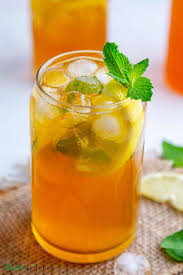
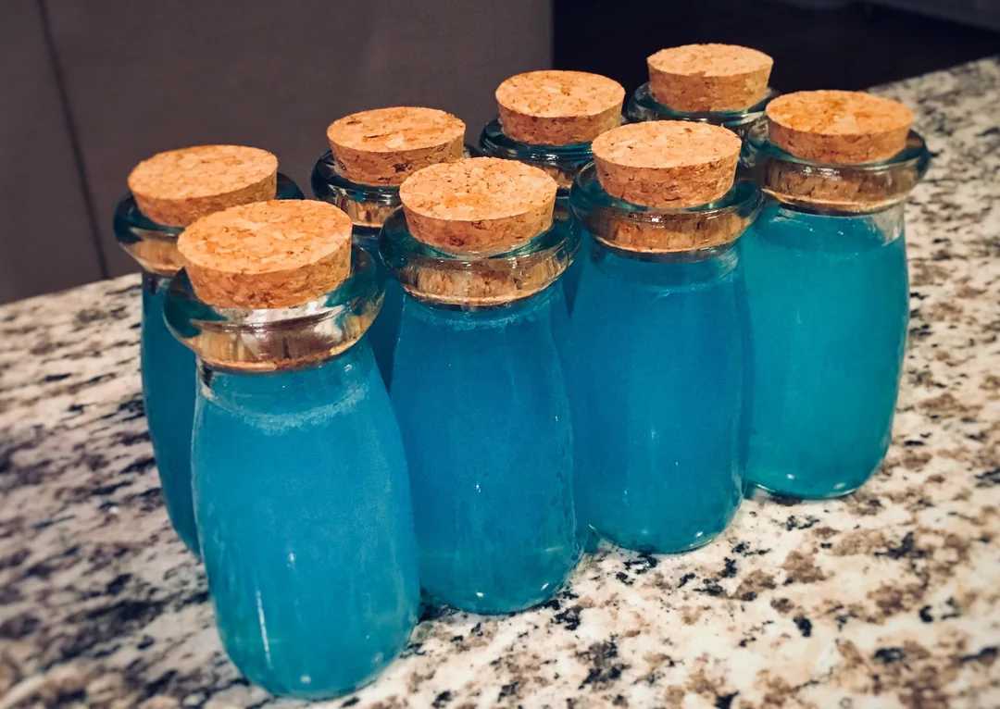
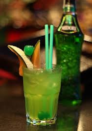
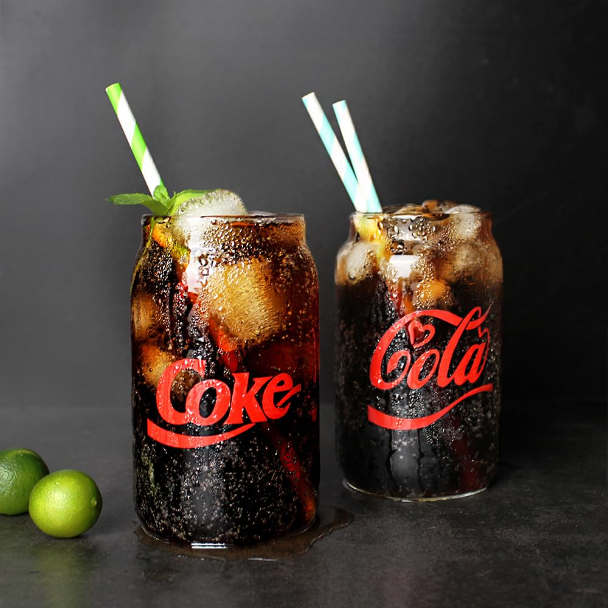
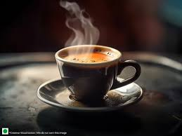
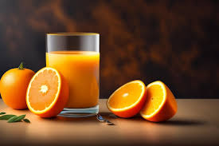
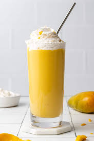
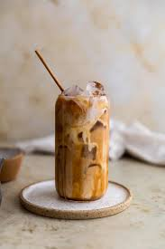

Water is water, no fat, no carbs, no sugar, no drugs, just water.
Recipe
Lemon iced tea is a cold drink good to freshen up your day.
RecipeMini pots inspired by Fortnite is a electrolyte packed drink.
RecipeJapanese iced tea is a cold tea that includes stripis of mango, and a small ball of lime.
RecipeCoca cola is a first choice for most people, especially when its cold!
RecipeThis is the most common type of tea and is normally drank during rainy days.
RecipeOrange juice is cold and always brightens up your mood!
RecipeA mango milkshake is always good for kids, it's healthy and tasty too.
RecipeCaramel iced coffee is good for those who wanna just hang around with their friends!
Recipe